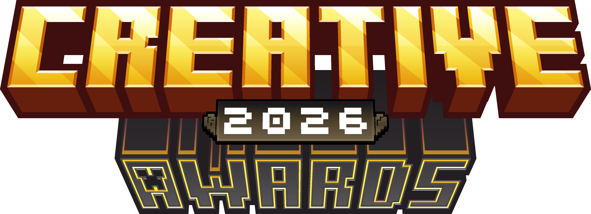

Здесь собрано всё, что нужно знать игроку перед подачей игры на Creative Awards: какие проекты принимаются, а какие нет, что такое лонг-лист церемонии и как проходит отбор до объявления номинантов. Всё достаточно просто!
Что такое лонг-лист ↓Заявку может подать любой участник сообщества Mineland Creative+ — как инди-автор обычной игры, так и команды разработчиков с крупными проектами. Заявку может подавать даже не сам автор игры, а обычный игрок, но только при уверенности в правильно указанных данных при заполнении заявки
| Параметр | Требование |
|---|---|
| Аккаунт | Действующий аккаунт без блокировок на Mineland |
| Автор / команда | Заявку подаёт автор игры либо один представитель команды от лица всех участников |
| Срок подачи | Возможность подать заявку на участие будет доступна до XX ноября этого года. Если Вы не успеете, то ваша игра сможет быть будет допущена только на Creative Awards 2027 |
Мы стараемся, чтобы в лонг-лист попадали завершённые проекты, а не черновики и наброски.
Лонг-лист — это первый и самый широкий этап отбора, через который проходит каждая заявка.
Лонг-лист — это полный список всех игр, чьи заявки прошли базовую проверку на соответствие правилам подачи (раздел выше) и были приняты к рассмотрению жюри. Попадание в лонг-лист не гарантирует номинацию — это лишь подтверждение того, что игра формально допущена к дальнейшему отбору.
Из лонг-листа жюри путём голосования формируют более узкий список номинантов по каждой номинации — именно за них впоследствии голосуют игроки и жюри на этапе основного голосования. Игра может остаться в лонг-листе, но не попасть в номинанты, если, например, в её номинации оказалось больше сильных претендентов, чем свободных мест в шорт-листе.
Автор или глава команды подаёт игру через форму заявки в указанные сроки.
Организаторы проверяют заявки на соответствие правилам и формируют общий список допущенных игр.
Жюри голосуют за игры из лонг-листа, которые попадут в номинанты по каждой номинации.
Открывается голосование игроков и жюри, по итогам которого объявляются победители на церемонии.
Если в этом году игра получила значимое обновление или дополнение, то да. Игра, поданная без изменений повторно, к участию не допускается. На данный момент неизвестно, будут ли допущены игры такого типа к общим номинациям. Возможно для них будет создана отдельная номинация.
Это нормальная часть отбора — попадание в лонг-лист уже означает, что заявка прошла базовую проверку. Список номинантов уже, чем лонг-лист, и формируется отдельно жюри. Не стоит расстраиваться — сам факт попадания в лонг-лист означает, что вашу игру заметили и признали достойной внимания. Вы также можете попробовать свои силы в следующем году, ведь каждая новая игра — это новый шанс попасть в число номинантов и побороться за награду. Мы рекомендуем создавать как можно больше разных проектов, чтобы иметь больше шансов попадания хотя бы в 1 номинацию.
Нет, награда официально вручается главе команды. После этого команда самостоятельно решает, как распорядиться выигранным золотом или креатив-коинами и разделить их между участниками.
Вы можете узнать попала ли ваша игра в лонг-лист написав напрямую организаторам в Discord-сообществе, но полноценный статус номинанта раньше объявления номинантов узнать нельзя.
Заявки доступны до XX ноября 00:00 по МСК. Успейте подать заявку до этой даты!
Подать заявку на участие